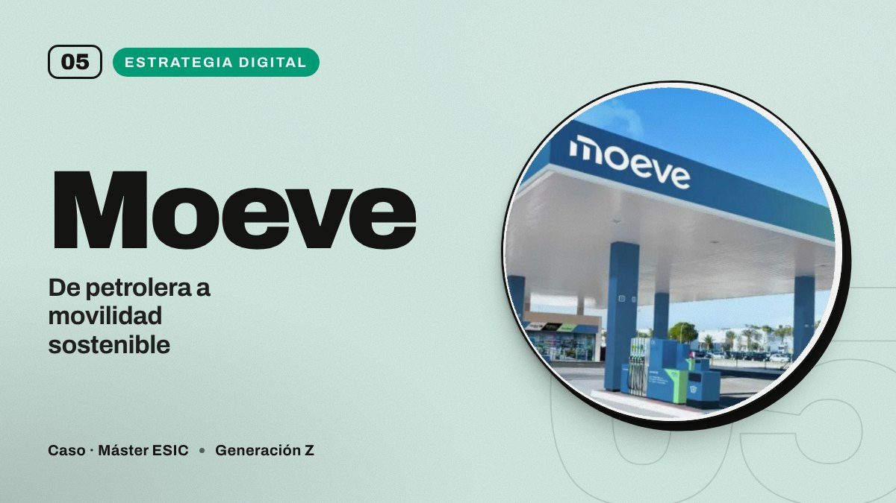

Frente a Endesa, Repsol Move y Tesla
Web · atractiva y personalizada, pero puede confundirRedes · activas y variadas, con YouTube desactualizadoSEO · fuerte en sus productos, débil en búsquedas generales del sector

Hoja de ruta digital para que Moeve, la antigua Cepsa, haga creíble su nuevo posicionamiento dentro de su plan Positive Motion 2030. Cinco bloques: estrategia de negocio, ética y ODS, plan de marketing digital, innovación abierta e investigación de mercado con la Generación Z.
Plan estratégico Positive Motion
Colaboración público-privada, plataforma de movilidad y especialización tecnológica
Energía limpia, trabajo decente, consumo responsable y acción por el clima
Uno por cada materia del máster aplicada al caso
La propuesta no es el problema. Quien conoce los servicios de movilidad de Moeve los valora bien. El problema es que casi nadie los conoce y que el pasado de petrolera pesa en la credibilidad.
Energía limpia: recarga ultrarrápida, biocombustibles de segunda generación y servicios de conveniencia.
App, pagos integrados y servicios personalizados que conectan la estación con el usuario.
La estación de servicio se convierte en un hub de movilidad donde esperar la recarga aporta valor.
leads generados
registros nuevos
de tasa de retención
percepción de marca
Cinco familias de indicadores: captación, conversión, retención, engagement y percepción de marca. Los valores son objetivos de ejemplo del dashboard (mayo) planteados en el trabajo.
Mejorar lo que ya vende con una alternativa menos contaminante.
Un servicio nuevo que aprovecha el tiempo que el cliente pasa en la estación.
Una idea que convierte la espera en energía y en una historia que contar.
Todo se apoya en una experiencia de movilidad completa: desarrollo de la app, programa de fidelización y zonas de descanso con servicios mejorados. Lo validamos con un Lean Canvas.
Cinco participantes de la Generación Z, de Zaragoza y Barcelona, para entender los porqués.
Cuatro bloques de preguntas, uno por cada hipótesis, de lo general a lo concreto.
Tendencias de búsqueda y conversación en redes sobre recarga, movilidad eléctrica y sostenibilidad.
La sostenibilidad cuenta, pero solo si viene con comodidad y servicios a mano.
Pocos puntos, esperas y tener que planificar. Una oportunidad para la estación de Moeve.
El rebranding moderniza la marca, pero muchos aún la ven como una petrolera.
Haz clic en una diapositiva para verla en grande · usa ← → para pasar
Hola. Esto es un caso del Máster en Marketing Digital de ESIC (grupo 3), hecho como trabajo académico.ESIC
No es una web oficial de Moeve (antes Cepsa) ni está afiliada a la compañía. Las marcas y logotipos pertenecen a sus titulares y se usan solo para ilustrar el proyecto.No oficial
Portfolio de Carlos Osuna